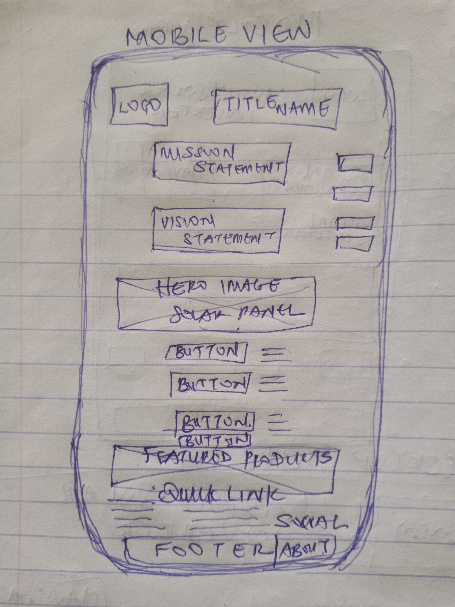
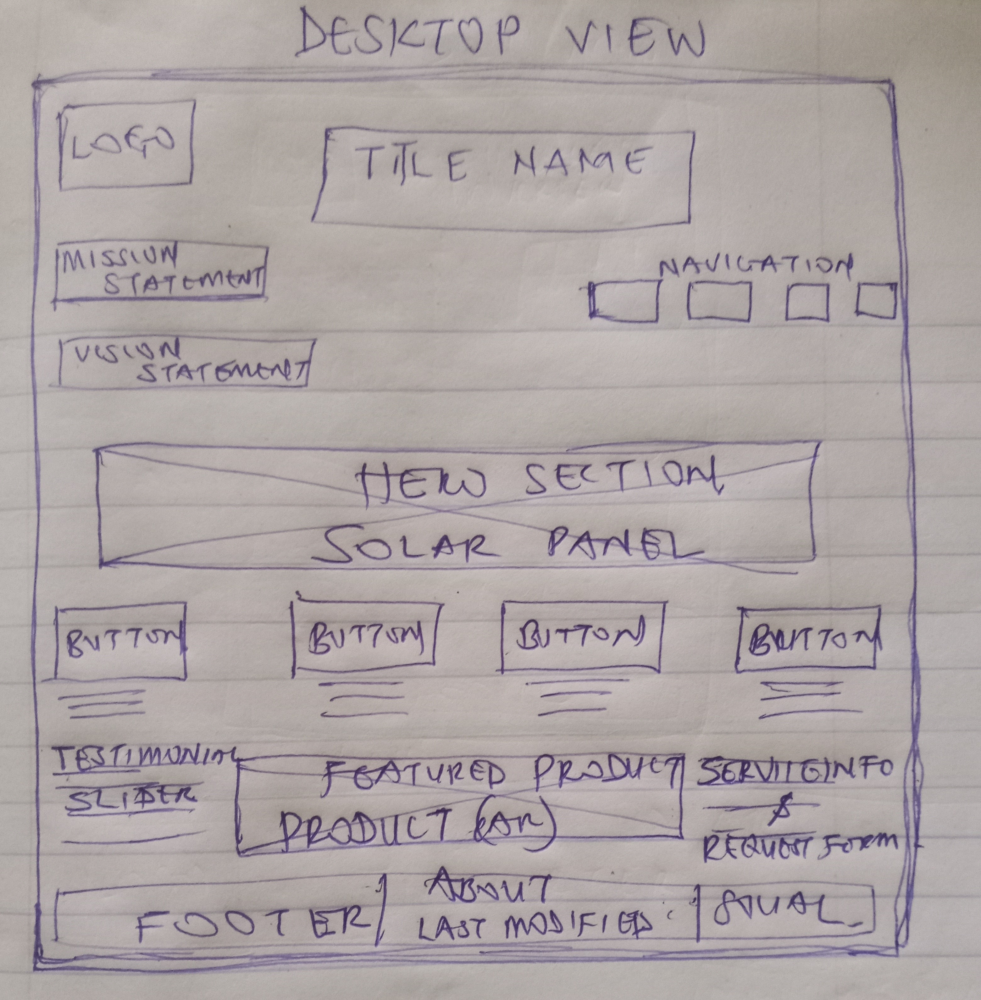

1. Site Name & Description
Site Name:Dartun Solar
Description
Dartun Solar is a dedicated website for the sales, installation, and servicing of solar inverters and related products.
The name reflects a commitment to sustainable energy solutions and trustworthy customer support.
Optional Domain Availability: dartunsolar.com
2. Site Purpose
Dartun Solar aims to provide information on solar inverter products, installation services, maintenance support, and
solar power education. The site features product catalogs, service request forms, FAQs, customer testimonials, and
contact information.
3. Scenarios
Scenario 1: Which solar inverter is best for my home energy needs?
Scenario 2: How do I request maintenance or installation services for my solar inverter?
Scenario 3: Where can I find technical specifications and user manuals for Dartun Solar products?
4. Color Schema
-Primary Color: #0A7C4F (Emerald Green) — for headers, navigation bar, and buttons (represents sustainability and
energy).
- Secondary Color: #F3F6F4 (Soft White) — for backgrounds and content areas (clean, modern look).
- Accent Color: #FFC300 (Solar Gold) — for highlights, icons, call-to-action elements, and important links.
Usage:
- Headings & Nav Bar: Emerald Green
- Backgrounds: Soft White
- Buttons & Highlights: Solar Gold
5. Typography
Headings & Nav: 'Poppins', sans-serif
(Used for all major headings and navigation links for clarity and modern look)
Body Text: 'Open Sans', sans-serif
(Used for paragraphs, product descriptions, forms)
Special Accents: 'Roboto Mono', monospace
(Used for technical details, specifications, and code snippets)
6. Wireframes
Home Page — Mobile View

Home Page — Desktop View
